Many engineering problems such as chemical reaction processes, heat
conduction, population dynamics are governed by coupled
convection-diffusion-reaction partial differential equations (PDEs) with
nonlinear source or sink terms. It is a significant challenge to solve
such PDEs numerically when they are convection/reaction-dominated. Such
models describe chemical processes and they are strongly coupled as an
inaccuracy in one unknown affects all the others. Hence, efficient
numerical approximation of these systems is needed. For the
convection/reaction-dominated problems due to the presence of sharp
fronts in the solution, on boundary and interior layers.
The numerical solution of such PDEs is particularly challenging and
requires special numerical techniques, which take into account the
structure of the advection.
Similar to the stabilized conforming finite elements, discontinuous
Galerkin finite element methods (DGFEMs) damp the unphysical oscillations
for linear convection dominated problems. For an accurate solution of
nonlinear convection dominated problems, higher order finite elements are
used because they are less diffusive and avoid artificial mixing of
chemical species under discretization. The main advantages of DGFEM are
the flexibility in handling non-matching grids and in designing
hp-refinement strategies. An important drawback is that the resulting
linear systems are more dense than the continuous finite elements and
ill-conditioned. The condition number grows rapidly with the number of
elements and with the penalty parameter. Therefore, efficient solution
strategies such as preconditioning are required to solve the linear
systems.
We apply the matrix reordering and partitioning technique in, which uses
the largest eigenvalue and corresponding eigenvector of the Laplacian
matrix. This reordering reflects very well the saddle point structure of
the underlying sparse matrix. For a given sparse matrix  , the weighted
Laplacian matrix
, the weighted
Laplacian matrix
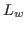
is defined
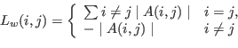
In the literature, certain eigenvalues and corresponding eigenvectors of the Laplacian matrix have been studied extensively. Among them is the the second smallest eigenvalue of the Laplacian and the corresponding eigenvector, so called Fiedler vector. The eigenvectors corresponding to the eigenvalues other than the first and the second smallest eigenvalue give the connected components of the graph. We propose sparse matrix reordering for solving saddle point linear systems using the largest eigenvalue and the corresponding eigenvector of the Laplacian matrix. Using this reordering, we show that one can reveal an underlying structure of the a sparse matrix.
The linear systems arising from
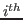
-Newton-Raphson iteration step has the form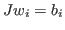
, where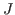
is the Jacobian matrix and,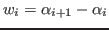
is the Newton correction, and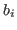
denotes the righthand side of the nonlinear system. We construct a permutation matrix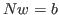
where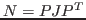
,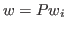
and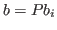
. After solving the permuted system, the solution of the unpermuted linear system can be obtained by applying the inverse permutation,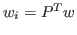
. The permuted and partitioned linear system can be solved via the block LU factorization in which the coefficient matrix has the form
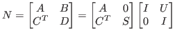
where
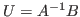
and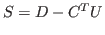
. The saddle point system is solved with block LU decomposition and BiCGStab with ILU preconditioning.
Numerical results for uniformly and adaptively discretizatized quasi
steady-state diffusion-convection-equations with polynomial, Monod type
and Arhenius nonlinearity, show the efficiency of the matrix reordering
technique and resolving internal and boundary layers. With increasing
degree of DGFEM polynomials, the condition numbers of the matrices  and
and  are decreased and their eigenvalues are well clustered, which
reduces the number of iterations and accelerates the solution of the
linear systems.
are decreased and their eigenvalues are well clustered, which
reduces the number of iterations and accelerates the solution of the
linear systems.